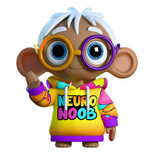

Trade Mark Journal No.2025/031 1 August 2025
UK00004236657 20 July 2025 (9,16,28)

- Class 9
- Ringtones [downloadable]; Downloadable ringtones; Downloadable video files; Downloadable image files; Downloadable music files; Downloadable software; Software downloadable from the internet; Digital music downloadable provided from MP3 internet websites; Downloadable videos; Downloadable application software; Digital music downloadable provided from MP3 internet web sites; Downloadable digital music provided from MP3 Internet web sites; Downloadable e-books; Digital music [downloadable] provided from mp3 web sites on the internet; Downloadable podcasts; Downloadable movies; Downloadable computer software; Computer software downloadable from the internet; Computer software downloaded from the internet; Downloadable video game software; Downloadable game software; Digital music downloadable from the Internet; Downloadable software applications; Downloadable video recordings; Downloadable digital music; Digital music downloadable provided from the internet; Downloadable applications; Downloadable videocasts; Computer games programmes downloaded via the internet [software]; Computer games programs downloaded via the internet [software]; Smartphone software applications, downloadable; Downloadable computer game software; Computer game software, downloadable; Digital music downloadable provided from a computer database or the internet; Digital books downloadable from the Internet; Downloadable digital photos; Computer software applications, downloadable; Downloadable computer software applications; Downloadable mobile coupons; Computer games programmes downloaded via the internet; Downloadable smart phone application software; Downloadable instant messaging software; Downloadable computer games; Downloadable computer programs; Computer programs, downloadable; Programs (Computer -) [downloadable software]; Computer programs [downloadable software]; Downloadable video game programs; Computer screen saver software, recorded or downloadable; Downloadable printing fonts; Apparatus for downloading audio, video and data from the internet; Computer software platforms, recorded or downloadable; Downloadable game related software applications; Downloadable software in the nature of a mobile application; Downloadable computer graphics; Downloadable ringtones for mobile phones; Downloadable application software for smart phones; Downloadable mobile applications; Downloadable posters; Downloadable computer game programs; Downloadable wallpapers for computers and phones; Electronic sheet music, downloadable; Downloadable smart phone applications (software); Downloadable electronic games; Downloadable electronic game programs; Downloadable video recordings featuring music; Software for pay per click optimisation; Downloadable digital assets; Downloadable software in the nature of a mobile application for playing games; Downloadable software applications for mobile phones; Downloadable films; Downloadable postcards; Downloadable publications; Downloadable electronic brochures; Downloadable electronic books; Downloadable electronic game software for wireless devices; Downloadable electronic newsletters; Downloadable sound recordings; Computer application software for streaming audio-visual media content via the internet; Downloadable screen savers for computers; Downloadable graphics for mobile phones; Covers for digital media players; Cases for digital media players; Computer software for the display of digital media; Media software; Media content; Digital signage; Media streaming software; Media and publishing software; Digital video players; Downloadable educational media; Audio digital tapes; Audio digital discs; Handheld media players; Recorded media; Media players; Wearable digital electronic communication devices; Digital sensory devices; Application software; Mobile application software; Application simulation software; Application software for robot; Computer application software; Application suites [software]; Application software for mobile devices; Application software for wireless devices; Application software for mobile phones; Downloadable mobile applications for the management of information; Application software for smart phones; Educational mobile applications; Computer application software for mobile phones; Software and applications for mobile devices; Software applications for mobile devices; Computer software applications; Educational tablet applications; Downloadable applications for use with mobile devices; Downloadable applications for mobile devices; Educational computer applications; Video recordings; Video tapes; Video cassettes; Cassettes [video]; Video game cassettes; Video films; Video screens; Pre-recorded video tapes featuring games; Pre-recorded video tapes; Video discs; Video game software; Interactive video software; Video games software; Video game programs; Video streaming devices; Video game discs; Pre-recorded video tapes featuring music; Prerecorded video tapes featuring music; Recorded video tapes; Interactive video game programs; Video tape players; Prerecorded video cassettes featuring music; Video tapes with recorded animated cartoons; Pre-recorded video cassette tapes; Audiovisual headsets for playing video games; Game programs for arcade video game machines; Games software for use with video game consoles; Game software; Interactive game software; Software for arcade video game machines; Programs for arcade video game machines; Computer game software for use with on-line interactive games; Computer video game software; Video game computer programs; Video and computer game programs; Computer game software; Headsets for playing video games; Computer game programs; Programs (Computer game -); Computer game cassettes; Computer game programmes; Computer games of chance; Computer games; Electronic game software; Interactive computer game programs; Games software; Electronic game programs; Downloadable interactive entertainment software for playing video games; Education software; Animated cartoons in the form of cinematographic films; Animated films; Prerecorded video cassettes featuring animated fictional stories; Downloadable comic strips; Identity cards, magnetic; Magnetic identity cards; Animated cartoons; Cartoons (Animated -); Electronic book reader covers; Electronic book readers; Digital book readers; Downloadable series of children’s books; Audio books; Talking books; Wearable activity trackers; Downloadable instruction manuals in electronic form; Training manuals in the form of a computer program; Instruction manuals in electronic format; Downloadable printable planners and organizers; Training manuals in electronic format; Teacher software; Downloadable templates for designing audiovisual presentations; Interactive software; Teaching and instructional apparatus; Computer programmes for interactive television and for interactive games and/or quizzes; Sensory software; Tactile screens [electronic]; Audio visual teaching apparatus; Podcasts; Videocasts; Audio tapes featuring music; Prerecorded audio tapes featuring music; Pre-recorded audio tapes featuring games; Pre-recorded audio cassettes featuring music; Audio recordings; Prerecorded music audio tapes; Audio tapes; Pre-recorded audio tapes; Prerecorded non-musical audio tapes; Pre-recorded CDs featuring music; Pre-recorded audio cassettes; Prerecorded music videos; Digital audio tapes; Downloadable music sound recordings; Audio tape players; Tape recordings of music; Pre-recorded DVDs featuring music.
- Class 16
- Digital printing paper; Video game strategy guidebooks; Computer game strategy guidebooks; Computer game hint books; Print characters; Printing characters; Comic strips' comic features; Series of computer game hint books; Books featuring fictional stories; Story books; Comic books; Manga graphic novels; Cartoon strips; Comic strips; Sketch books; Role playing game equipment in the nature of manuals; Romance novels; Graphic novels; Comics; Caricatures; Novels; Comic strips [printed matter]; Cartoon prints; Book covers; Book jackets; Book ends; Book wrappings; Book markers; Non-fiction books; Series of non-fiction books; Books; Writing books; Guide books; Recipe books; Series of fiction books; Song books; Picture books; Fiction books; Poster books; Wallpaper sample book; Covers for books; Appointment books; Printed books; Coloring books; Guest books; Gift books; Note books; Wirebound books; Writing or drawing books; Resource books; Flip books; Travel guide books; School writing books; Birthday books; Information books; Jackets of paper for books; Painting books; Colouring books; Travel books; Address books; Drawing books; Sticker books; Blank journal books; Fantasy books; Coupon books; Pop-up books; Date books; Scrap books; Agenda books; Music note books; Baby books; Baby books [storybooks]; Books featuring fantasy stories; Printed stories in illustrated form; Newspaper comic strips; Writing sets; Writing paper; Newspaper cartoons; Photograph album pages; Cartoon strips [printed matter]; Activity books; Sticker activity books; Instruction sheets; Printed teaching activity guides; Informational sheets; Printed information sheets; Printed informational sheets; Etching sheets; Paper sheets for note taking; Children's activity books; Printed survey answer sheets; Paper sheets [stationery]; Printed answer sheets; Workbooks containing exercises; Booklets; Printed booklets; Information booklets; Instruction manuals; Instructional manuals for teaching purposes; Computer instruction manuals; Strategy guide books for card games; Instructional and teaching materials; Computer game instruction manuals; Scrapbook pages; Book marks; Printed manuals; Document covers; Instruction manuals for exercise equipment; Training manuals; Printed guides; Instructional materials; Handbooks [manuals]; Manuals [handbooks]; Colouring pencils; Pencils for colouring; Colouring crayons; Chalks for colouring; Colouring pens; Colouring pictures; Colour pencils; Coloring pictures; Colour pens; Coloring books for adults; Coloured chalk; Coloured pens; Color pencils; Drawing pencils; Stamping inks; Drawing stencils; Pencils; Figurines [statuettes] of papier mâché; Figurines made from cardboard; Figurines of papier mâché; Figurines made from paper.
- Class 28
- Video game apparatus; Video game consoles; Video game machines; Video game joysticks; Joysticks for video games; Game consoles; Game cards; Bingo game playing equipment; Games; Arcade video game machines; Arcade games; Game boards for trading card games; Arcade game machines; Computer game consoles; Video game apparatus, arcade games, and amusement machines ; Handheld game consoles; Computer game joysticks ; Gamepads for video game machines; Home video game machines; Controllers for game consoles; Chess games; Arcade video game machines with multi-terminals; Dice games; Coin-operated arcade video game machines; Joysticks for video game machines; Joysticks being parts of video game consoles; Balls for playing games; Controllers for video game machines; Stand-alone video game machines; Computer game apparatus; Video game machine cases; Role play games; Hand-held consoles for playing video games; Amusement game machines; Quiz games; Skill and action games; Action skill games; Games consoles; Checkers [games]; Checkers games; Video game machines for use with televisions; Role playing games; Card games; Token-operated video game machines; Machines for playing games of skill or chance; Board games; Table-top games; Game controllers for computers; Coin-operated games; Balls for games; Games (Balls for -); Marbles for games; Games (Marbles for -); Fantasy character toys; Rubber character toys; Games relating to fictional characters; Toy human characters; Plastic character toys; Models for use with role playing games; Play sets for action figures; Doll costumes; Toy chemistry sets; Toy model theatres in the form of children's theatre sets; Play figures; Toy environments for use with action figures; Jokes (play things); Toy action figurines; Toy figures capable of transforming into various shapes; Playsets for action figures; Toy musical boxes [play articles]; Toy action figures; Mascot dolls; Electronic activity toys; Plush toys; Plush dolls; Stuffed and plush toys; Stuffed plush toys; Plush stuffed toys; Soft sculpture plush toys; Smart plush toys; Plush toys with attached comfort blanket; Cuddly toys; Stuffed bean-filled toys; Soft toys; Fluffy toys; Stuffed toy bears; Soft sculpture toys; Stuffed toys; Stuffed toy animals; Stuffed dolls; Soft toys in the form of animals; Stuffed animals [toys]; Squeezable squeaking toys; Inflatable ride-on toys; Stuffed puppets; Inflatable thin rubber toys; Inflatable bath toys; Toy foam hands; Inflatable toys; Toy beanbags [Otedama]; Fabric toys; Bendable toys; Toy dolls; Modeled plastic toy figurines; Ride-on toys; Toy figurines; Rocking toys; Toy furniture; Plastic toys for use in the bath; Toy tents; Bendy balls being toys; Pet toys; Cloth toys; Puppets; Finger puppets; Hand puppets; Masks (Toy -); Toy masks; Toy putty; Theatrical masks; Masks (Theatrical -); Toy musical instruments; Costume masks; Toy musical boxes; Costumes being childrens playthings; Animal replicas as playthings; Masks [playthings]; Toy hats; Toy xylophones; Toy robots; Toy balloons; Bobble-head dolls; Musical toys; Face masks being playthings; Toy castles; Doll playsets; Rag dolls; Wind-up toys; Luminous toy putty; Wooden toys; Wind-up walking toys; Toy gum machines; Toy music boxes; Toy balls; Bobblehead dolls; Ball-jointed dolls [BJD]; Teddy bears; Clothing for teddy bears; Christmas dolls; Doll clothing; Doll furniture; Plastic toys; Baby playthings; Paper dolls; Infant toys; Toy animals; Developmental toys; Electronic learning toys; Toy blocks for learning braille; Mechanical toys; Electric muscle stimulation bodysuits for sports; Toy food; Motor driven toy animals; Multiple activity toys for babies; Mechanical action toys; Adhesive abdominal exercise belts, electric, for muscle stimulation; Inflatable inner tubes for aquatic recreational use; Children's multiple activity toys; Electronic toys; Toys in the nature of imitation foodstuffs; Collectable toy figures; Toy figures; Toy figure playsets; Toy tableware; Positionable toy figures; Doll accessories; Dolls; Headgear for dolls; Playsets for dolls.
Neuro Nook Limited